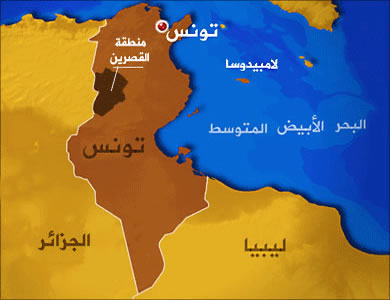

الإسم الرسمي : الجمهورية التونسية
العاصمة : تونس
تاريخ الإستقلال الرسمي : 20 مارس 1956
تاريخ إعلان الجمهورية : 25 جويلية 1957
القوات المسلحة التونسية : القوات البرية, القوات الجوية, القوات البحرية
الاعياد الرسمية : عيد الإستقلال 20 مارس( 1956), عيد الجمهورية 25 جويلية (1957), عيد الثورة 14 جانفي 2011
عدد الاقاليم : تنقسم الجمهورية التونسية إدارياً إلى 6 أقاليم تتوزع عليها 24 : ولاية أريانة، ولاية باجة، ولاية بن عروس ،ولاية بنزرت ،ولاية تطاوين ،ولاية توزر ،ولاية تونس ،ولاية جندوبة ،ولاية زغوان ،ولاية سليانة ،ولاية سوسة ،ولاية سيدي بوزيد ،ولاية صفاقس ،ولاية قابس ،ولاية قبلي ،ولاية القصرين ،ولاية قفصة، ولاية القيروان، ولاية الكاف، ولاية مدنين ،ولاية المنستير ،ولاية منوبة، ولاية المهدية، ولاية نابل
عدد السكان : 10 ملايين و982 ألفا
اللغة الرسمية : العربية
المساحة : 163,610 كم2
النظام القانوني : الدستور التونسي
السن الادنى للإقتراع : 18 سنة
ما قبل التاريخ
أظهرت بعض الحفريات أقيمت بالجنوب الشرقي للبلاد التونسية (خاصة منطقة قفصة و ماجاورها) إلى وجود أثار للأنسان و حياة قبلية لقبت لاحقا "بالحضارة القبصية" (نسبة إلى مدينة قفصة،ذلك أن أول الحفريات حول هذه الحضارة وأكبرها قامت قرب هذه المدينة) حضارة تاريخية ظهرت بين 10.000 و 6.000 سنة قبل الحاضر، أي في آخر العصر الحجري القديم وفي العصر الحجري الوسيط وفي العصر الحجري الحديث، في المناطق الداخلية من شمال إفريقيا الحالي، خاصة في تونس وفي الجزائر، وفي بعض المناطق ببرقة في ليبيا
العهد النوميدي
نوميديا هي مملكة أمازيغية أنشأها سكان المنطقة عاصمتها سيرتا. امتدت من غرب تونس الحالية مرورا بشمال الجزائر الحالية وصولا إلى جزء من المغرب الحالي أي إلى وادي ملوية إضافة الى جزء من ليبيا الحالية حتى حدود إقليم برقة حيث تعتبر من أشهر الممالك القديمة للأمازيغ وأكثرها قدما. عرفت تونس أهم معركة في التاريخ معركة زاما سنة 202 قبل الميلاد التي تمكن فيها ماسينيسا أشهر الملوك النوميديين من هزم حنبعل القرطاجي أهم الجنيرالات التاريخيين. و تعد هذه المعركة نقطة تحول في التاريخ النوميدي حيث شهدت هذه المملكة الأمازيغية ازدهارا كبيرا في مختلف الميادين عسكريا ثقافيا و على المستويين التجاري و الفلاحي
العهد البونيقي
لقد سيطر الفنيقيون أو البونيقيون على البلاد التونسية طيلة ألف سنة من أواخر الألف الثانية حتى سنة 146 قبل الميلاد أي حتى تاريخ تهديم قرطاج. و قد استطاعوا بفضل رسوخ أقدامهم و مناعة مراكزهم على السواحل أن يحتكروا كل المبادلات مع الخارج و أن ينفردوا بأحدث التقنيات و أكثر النظم إحكاما بالنسبة إلى ذلك العصر. أما سكان البلاد الأصليون فقد كانوا اما رعايا خاضعين لنفوذ قرطاج اللوبيون في قسم كبير من القطر التونسي) أو مستقلين عنها مع التأثير العميق الذي كان للبونيقيين فيهم
العصر الروماني
كانت تونس منقسمة بين قرطاج والدولة النوميدية حتى سقوطهما تحت الجمهورية الرومانية، عاشت تونس سنوات تحت حكم الأباطرة الروم, إلى تاريخ الفتوحات الإسلامية. فكان تحول البلاد التونسية بعد حملة العبادلة السبعة. التي انتهت بمقتل جرجير ودخول مدينة سبيطلة تحت حكم العرب، ثم تواصل الإنتشار الإسلامي تجاه القيروان ثم باقي المغرب العربي وصولا إلى جنوب أوروبا
الحكم العثماني
أصبحت تونس بعدما دخلها العثمانيون الأتراك سنة 1574 إيالة عثمانية يحكمها باشا يولّيه عليها الخليفة في إسطمبول لمدّة معيّنة. والملاحظة هنا أن المقاطعة الجديدة في الإمبراطورية كانت تتميّز إدارياّ عن جارتيها إيّالتي الجزائر و طرابلس و أنّها كانت منذ ذلك الحين مؤهّلة لأن تسلك سبيلها الخاص في التطوّر أي تتميّز بكيان تونسي مستقل .
سمّيت المقاطعة "وجقا أو سنجقا" وهو ما يؤكّد طابعها العسكري و قد انتصب بتونس و بصفة دائمة ما بين 3 آلاف و4 آلاف من عساكر الإنكشارية. و عموما فقد كانت الأوجاق المغاربية حصون الإسلام المنيعة التي تتصدّى لضربات الصليبيين المسيحيين
عهد الدّايات
كان الدايات ضبّاطا من أصل تركي, استولوا على السلطة بفضل عساكر الإنكشارية. كان للدّايات سلطة واسعة حتّى على الممثّلين الرّسميين للحكم العثماني بتونس مثل الباشا.
وصل الدّايات إلى الحكم بعد ثورة 1591, فقد اغتنم عامّة الجند الأزمة السياسية و المالية التي كانت تتخبّط فيها إسطنبول،كما اغتنموا ظروف الغضب المتفشّي بين الرّعايا لقتل رؤوس القوّات التركية المحتكرين لعضوية الدّيوان الدّيوان هو مجلس عسكري أعلى يكوّن من آغوات و بولكابشية , كان له شأن عظيم في حياة المقاطعة الإيالة و كان سلطانه يعدل سلطة الباشا.
و بذلك أصبح الدّابات أصحاب السلطة الحقيقييّن في تونس, ثم ما لبث أحد الدّايات المتنفّذين و هو عثمان داي أن استولى على الحكم عام 1598 و قضى بذلك على منافسيه و على الدّيمقراطيّة العسكرية المباشرة التي كانت سائدة آن ذاك.
استمرّ حكم الدّايات إلى منتصف القرن السابع عشر و ذلك بفضل عنفوانهم و شدّتهم, إذ كانوا ضبّاطًا أشدّاء تخرّجوا من صفوف الجنديّة, يتعاطون الجهاد البحري مثل عثمان داي و أسطا مراد كانوا يغنمون من السفن المسيحية بضائعها و الأسرى الذين كانوا يباعون في أسواق تونس . كما برع الدّايات في السياسة مثل يوسف داي 1598-1610 وأحمد خوجة 1637-1640.
و يحسب للآغوات أنّهم أعادوا للجيش الإنضباط الشديدالذي كان هو مصدر قوّتهم, كما أنّهم سلكوا سياسة حازمة و عملوا على حماية أعيان البلاد و تعقّبهم أهل الفساد تعقّبًا لا هوادة فيه, كما أنصفوا الرّعايا من ظلم ممثّلي إسطنبول و أعادوا الأمن و الإستقرار للبلاد التونسية و تحوّل اعيان المدن التونسيين لمستشارين و مقرّبين لأصحاب السلطة.
أمّا من ناحية الدّين, فقد حرص الدّايات على إقرار نظام المدينة الإسلامية و سننها من جديد فآزرهم علماء الدّين, مما زاد سلطان الدّايات شرعية
حكم البايات الحسينيين
الحسينيون: سلالة من البايات حكمت في تونس سنوات 1705-1957 م. وتنحدر أصولها من كريت المقر: تونس (قصر باردو). كان مؤسس السلالة الحسين بن علي (1705 - 1735 م) قائدا على فرقة الخيالة في الجيش العثماني. بعد اضطراب الأوضاع السياسية في تونس، استولى على الحكم على حساب المراديين ثم أخذ يستقل بالأمر حتى أصبحت دولته كيانا قائما بذاته (على حساب الأتراك العثمانيين). أدت الحروب العائلية التي عرفتها دولة الحسينيين في تونس في عهد (ابن أخ المؤسس) علي باشا (1735-1756 م) إلى غزو البلاد سنة 1756 م، ثم قيام وصاية على تونس من طرف حكام الجزائر (دايات الجزائر).
استعادت الدولة عافيتها أثناء عهد علي باي بن حسين (1759-1782 م) ثم حمودة باشا بن علي (1782 - 1814 م)، سميت هذه الفترة بالفترة الذهبية. اكتمل استقلال تونس سنة 1807 م وأصبحت دولة كاملة السيادة. بدأت في نفس الفترة عملية تعريب البلاد، من خلال إحياء الثقافة، كما تم إدخال نظام تعليمي أشرفت عليه الدولة. بعد أن قامت فرنسا باحتلال الجزائر سنة 1830 م، أصبحت تونس تحت رحمة القوى الأوروبية، كما أصبح اقتصادها مرتبطا بها أكثر. حاول أحمد باي (1837-1855 م) ثم محمد الصادق بن حسين (1859-1882 م) القيام بإصلاحات على الطريقة الأوروبية.
ابتداء من سنة 1869 م أصبحت الدول الأوروبية تتدخل مباشرة في تدبير الشؤون المالية الدول (الخزينة) كما تم تعطيل الأصلاحات السابقة. سنة 1881 م وبموجب معاهدة باردو، أصبحت تونس تحت الحماية الفرنسية. تأرجحت سياسة البايات بين الإملاءات الفرنسية ورغبتهم في دعم المطلب الشعبي والمتمثل في الاستقلال، كان الحزب الحر الدستورى يتزعم القوى الشعبية. قام الفرنسيون سنة 1943 م بخلع الباي منصف باي بن الناصر باي بعد أن أبدى نزعة وطنية. مع قيام الجمهورية سنة 1957 م، قام الحبيب بورقيبة بدوره بخلع آخر البايات الحسينيين الأمين باي بن محمد الحبيب 1943-1957م
فترة الإحتلال الفرنسي 1881 - 1956
بعد احتلالها للجزائر سنة 1830, فرضت فرنسا الإمبرياليّة معاهدات اقتصادية قاسية على البلاد التونسية المنهكة أصلا من أزمات متتالية رغم محاولات الإصلاح , ثمّ ما لبثت فرنسا أن استغلّت حالة الضعف التي تنخر جسم الدولة العثمانية و غزت التراب التونسي في العام المشؤوم على تونس 1881 . وقد كانت تونس آنذاك محل صراع بين القوى الأوروبية الإستعمارية خاصة إيطاليا و إنجلترا فضلا عن فرنسا , لاقت القوات الغازية مقاومة شرسة من قبل الأهالي خاصة رجال القبائل , إلاّ أن قلّة العدد و العدّة مقارنة بالجيش النّظامي الفرنسي أدّت إلى هزيمة التونسييّن و أُرغم الباي على توقيع معاهدة مُذلّة لتونس , فرضت بموجبها فرنسا الإحتلال على تونس و سمّيت بمعاهدة الحماية و ذلك في 2 مايو 1881وإستمر الإحتلال الفرنسي إلى حدود 1956 أين تم توقيع بروتوكول الإستقلال التام بين تونس وفرنسا
الاستقلال
ساعدت الظرفية العالمية بعد الحرب العالمية الثانية (1939-1945) التي اتسمت بالقطبية الثنائية (الحرب الباردة) الحزب الحر الدستوري الجديد على تدعيم موقفه حول النقاط الولسنية خاصة حق الشعوب في تقرير مصيرها ضد فرنسا التي أصبحت قوة استعمارية ضعيفة متراجعة من الحرب شأنها شأن إنجلترا. رغم أن فرنسا وعدت الحزب بالاستقلال سنة 1952 الا انها اخلفت الوعد فنتج عنه الثورة المسلحة سنة 1954 مما جعلت فرنسا ترزح إلى المفاوضات سنة 1955 التي اقرت فيها حكومة منداس فرانس بالاستقلال الداخلي الذي لقي معارضة من قبل صالح بن يوسف الذي إعتبره خطوة للوراء ثم الاستقلال التام سنة 1956 والتي شهدت بعض المعارضة من اليمين المتطرف وانصار الامبريالية الفرنسية
الثورة
الثورة التونسية كانت حملة مكثفة من المقاومة المدنية التي نجمت عن ارتفاع معدلات البطالة ، والتضخم ، والفساد, عدم وجود حرية التعبير والحريات السياسية الأخرى و سوء الأحوال المعيشية . وقيل إن النقابات العمالية كانت جزءا لا يتجزأ من الاحتجاجات. الاحتجاجات شكلت بداية موجة الربيع العربي ، وهي مجموعة من التحركات المماثلة في جميع أنحاء العالم العربي
شكلت وفاة محمد البوعزيزي ، البائع المتجول التونسي الدي يبلغ من العمر 26 عاما ، الذي قام بإضرام النار في جسده في 17 ديسمبر 2010 احتجاجا على مصادرة بضاعته و الإذلال الذي تعرض له من قبل أحد مسؤولي البلدية. بداية الاحداث في ولاية سيدي بوزيد إزداد الغضب و تحول إلى إحتجاجات عنيفة بعد وفاة البوعزيزي في 4 كانون الثاني 2011، مما أدى في النهاية إلى تنحي الرئيس زين العابدين بن علي في 14 كانون الثاني 2011، بعد 23 عاما في السلطة.
استمرت الاحتجاجات المطالبة بحل الحزب الحاكم و إقصاء جميع أعضائه من الحكومة الانتقالية التي شكلها محمد الغنوشي . في نهاية المطاف إستجابت الحكومة الجديدة لمطالب المتظاهرين . و أعلن القضاء التونسي حل التجمع الدستوري الديمقراطي الحزب الحاكم السابق و مصادرة جميع أملاكه . كما قرر وزير الداخلية حل " البوليس السياسي " ، و محكمة أمن الدولة التي كانت تستخدم لترهيب و اضطهاد النشطاء السياسيين.
يوم 3 مارس 2011، أعلن الرئيس أن الانتخابات للمجلس الوطني التأسيسي ستعقد في 23 أكتوبر 2011. أعلن المراقبون الدوليون والمحليين أن الإنتخابات جرت في ظروف حرة ونزيهة . فازت حركة النهضة ، المحظورة سابقا في ظل نظام بن علي ، بحوالي 90 مقعدا من أصل ما مجموعه 217. في 12 كانون الأول 2011، وانتخب الناشط المعارض المخضرم السابق و الحقوقي منصف المرزوقي رئيسا للبلاد.
في مارس 2012 ، أعلنت حركة النهضة أنها لن تدعم جعل الشريعة المصدر الرئيسي للتشريع في الدستور الجديد. وانتقد موقف حزب النهضة بشأن القضية من قبل الإسلاميين المتشددين ، الذين يريدون الشريعة كاملة ، ورحبت به الأحزاب العلمانية. في 6 فبراير سنة 2013، شكري بلعيد ، زعيم المعارضة اليسارية والناقد البارز في الجبهة الشعبية ، اغتيل. وفي 25 جويلية 2013 تم إغتيال أحد زعماء المعارضة القومية في تونس وهو محمد براهمي وصادف ذلك ذكرى عيد الجمهورية . وقد أعقب ذلك أزمة سياسية خانقة أدت في الاخير إلى إطلاق حوار وطني برعاية الرباعي الراعي للحوار أدى في النهاية إلى تخلي حكومة علي العريض عن مهامها وتسليم مقاليد الحكم إلى حكومة مستقلة برئاسة مهدي جمعة تولت تصريف الاعمال إلى حين الإنتخابات القادمة وفي اكتوبر 2014 أجريت أول انتخابات تشريعية في تونس بعد المصادقة على الدستور الجديد فاز فيها حزب حركة نداء تونس بالمرتبة الأولى يليه حزب حركة النهضة ثم الإتحاد الوطني الحر وتلت هذه الانتخابات إنتخابات رئاسية تمت على دورتين بين الباجي قائد السبسي رئيس الحكومة الإنتقالية بعد الثورة ووزير سابق في عهد الحبيب بورقيبة من جهة و محمد المنصف المرزوقي حقوقي ورئيس الجمهورية المؤقت الذي تولى تسيير البلار أثناء بعد إنتخاب المجلس الوطني التأسيسي وإنتهت الإنتخابات الرئاسية بفوز الباجي قائد السبسي باغلبية الأصوات ولأول مرة في تاريخ الجمهورية التونسية تم تسليم السلطة بطريقة ديمقراطية وسلمية سلسة . وبذلك انتهت المرحلة الإنتقالية
الموقع : توجد الجمهورية التونسية في أقصى الشمال الشرقي من القارة الإفريقية وسط حوض البحر الأبيض المتوسط . وهي تقع بين الدرجة السابعة والثلاثين والدرجة الثلاثين شمال خط الاستواء. ويحيط بها البحر الأبيض المتوسط من الجهتين الشمالية والشرقية وتمتد سواحلها على أكثر من 1.300 كلم وتحدها الجزائر غربا وليبيا جنوبا
المناخ :
تقع تونس جنوب المنطقة المعتدلة ويخضع مناخها للتأثيرات المتوسطية فهو لذلك مناخ معتدل ولطيف، ويبلغ متوسط ارتفاع الحرارة 3,29 درجة في ديسمبر و 44،11 درجة في شهر جويلية.
أما الأمطار فهي تنزل بدون انتظام وتتوزع بدون تساو بحسب الفصول والجهات ( 75 % منها تنزل في الشتاء ). ويتجاوز معدل الأمطار 1.500 مليمتر سنويا في عين دراهم الواقعة في أقصى الشمال ، وتتدنى هذه الكميات إلى أقل من 150 مليمترا في أقصى الجنوب
التضاريس :
التضاريس في تونس قليلة رفاع بصورة عامة . فأعلى قمة في البلاد وهي " جبل الشعانبي " لاتفوق 1.544 مترا وتمثل السهول ثلثي البلاد
تونس الوسطى : وهي منطقة السباسب العليا والسباسب المنخفضة وتمتد حتى منطقة الساحل ، وأخيرا تونس الجنوبية تحدها شمالا منطقة " الشطوط" وهي المتميزة بالفضاءات الصحراوية الشاسعة وأشجار النخيل الباسقة حول نقاط المياه القليلة . ولايتكثف السكان إلا في الواحات على أن بعضهم يعيشون متنقلين في هذه الأرجاء الفسيحة بحثا عن المراعي
الأنهار والأودية : أهمها وادي مجردة ووادي مليان ... أما أودية زرود ومرق الليل ونبهانة ، فهي سيول جارفة غير منتظمة السيلان تنطلق من الظهرية وتنصب في بحيرة الكلبية
المساحة الإجمالية : 163610 كلم٢
مساحة اليابسة : 155360 كلم٢
مساحة المياه : 8250 كلم٢
مساحة الأراضي المروية : 3850 كلم٢
الموقع الجغرافي لتونس :
